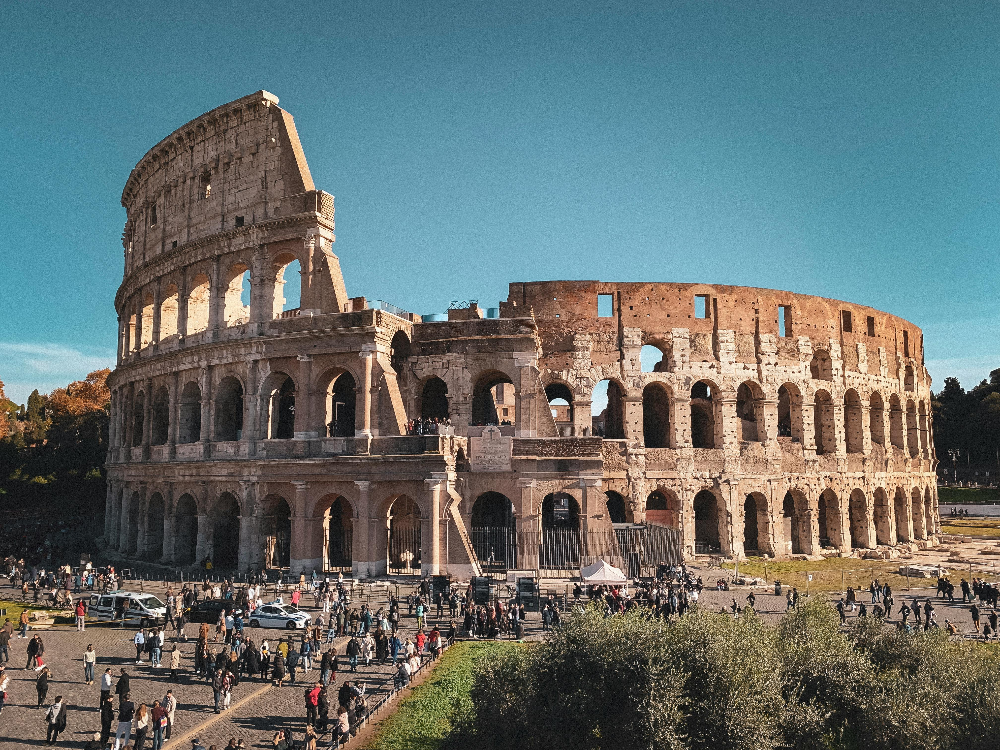

Coliseu de Roma
O Palco da Glória e da História
O que é o Coliseu?
O Coliseu é o anfiteatro mais famoso do mundo, localizado no coração de Roma. Foi inaugurado no ano 80 d.C., durante o Império Romano.
Como foi construído?
- Construído com pedra, concreto e tijolos.
- Capacidade para 50 a 80 mil pessoas.
- Dividido em arquibancadas, arena central e subterrâneos.
- Demorou cerca de 8 anos para ficar pronto.
Curiosidades históricas
Nome Original
Originalmente chamado de Anfiteatro Flaviano.
Resistência
Sobreviveu a terremotos, incêndios e séculos de desgaste.
Inspiração
Inspirou a arquitetura de diversos estádios modernos.
Ponto Turístico
Hoje recebe milhões de visitantes todos os anos.